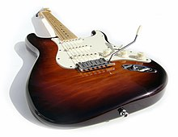
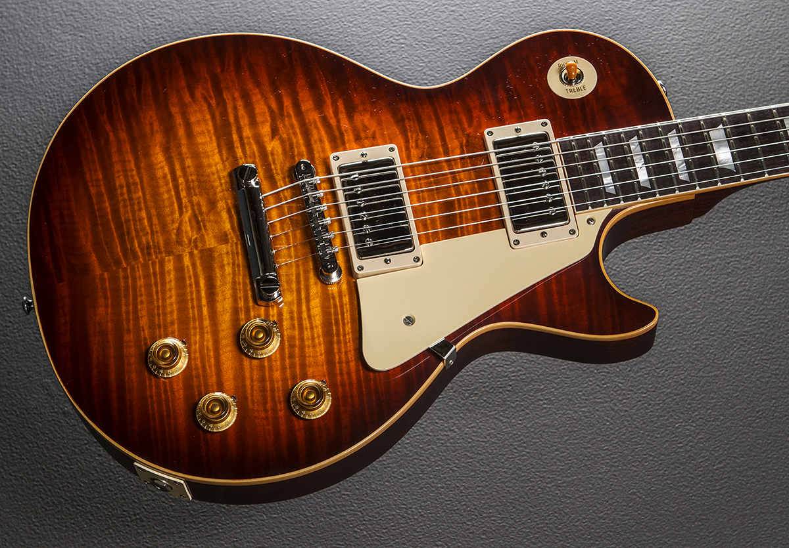

Stratocaster
The Fender Stratocaster, colloquially known as the Strat, is a model of electric guitar designed from 1952 into 1954 by Leo Fender.
Telecaster

The Fender Telecaster, colloquially known as the Tele /ˈtɛli/, is the world's first mass-produced, commercially successful solid-body electric guitar.
Les Paul
The Gibson Les Paul is a solid body electric guitar that was first sold by the Gibson Guitar Corporation in 1952. The Les Paul was originally offered with a gold finish and two P-90 pickups.